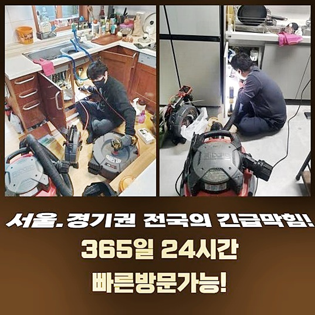
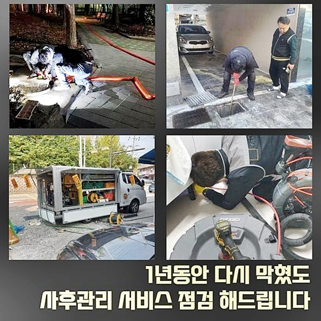
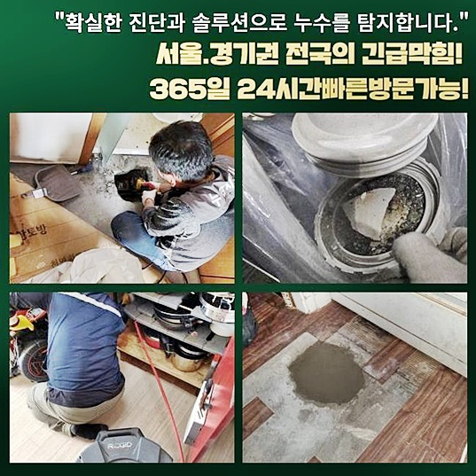
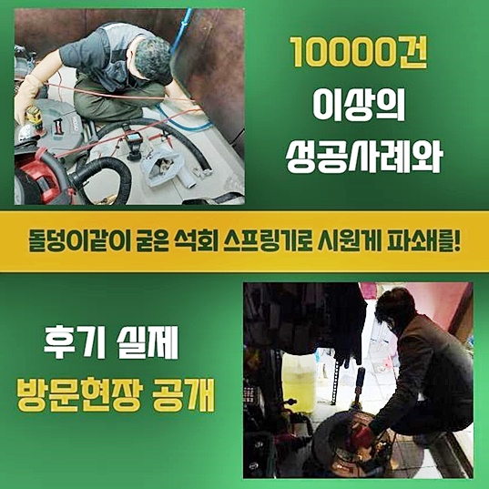
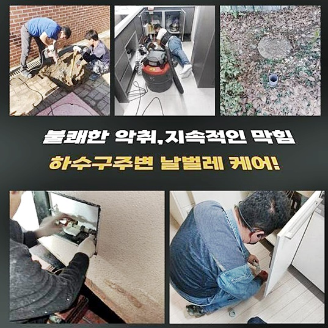
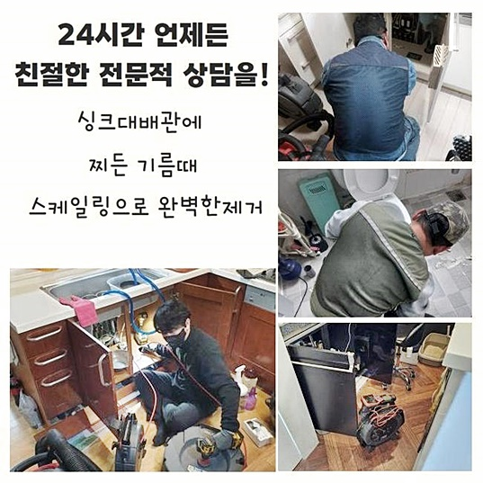

🏠 성남 수내동욕실뚫음 백현동 배관뚫기 출장수리
용인시 처인구 배관막힘 전문 시공 후기

📋 작업 개요
- 위치: 용인시 처인구, 수원시 영통구, 화성시 동탄
- 서비스 유형: 배관막힘, 고압세척, 내시경점검
- 작업 일시:
- 업체명: 하수구수사대 (010-5615-2118)
🔍 문제 상황
성남 수내동욕실뚫음 백현동 배관뚫기 출장수리
어디에서든지 하수관은 반드시 필요한존재죠
하수도가 막혀버려서 원활한 배수상태로 이루어지지못하면 불편함이 이만저만이 아닐겁니다
서칭을통해 방법을연구하여 가벼운조치로 시도할순있지만 이물로인하여 확실히 막혀버렸다면 전문인의 도움을통하여 해결해보는것이 올바른 선택이겠습니다
저희업체로 문의하신분들 사례중 급작스레 발생한 막힘현상으로 상당한곤란함을 겪으신경우도 있답니다
이번고객은 인테리어에대한 공사를한지 며칠도안되서 이러한일이 발생된건지 당황스러워하셨답니다
빠른해결을 원하였고 저희들은 최첨단장비를 준비하여 신속한출동으로 방문할수있었죠
대부분으로 가정집에선 욕실이나 싱크대배관등 배수구막힘문제가 빈번히 발현되고있답니다
이런경우에는 다양스러운 곤란함이 생길수가있죠
주방에서 물사용이 어렵다면 일상생활이 진행될수없는 상태로 이어지게될텐데요
해결해드리기위하여 고객님께선 공휴일에 방문해주기를 원하셨으며 원하는 시간대에맞춰 내방해드렸죠
저흰 공휴일과 주말도 포함해서 늦은밤이더라도 시공이 가능하기에 문의만주신다면 달려가도록 할게요!

🔎 원인 분석
💡 전문가 진단: 정밀 진단 장비를 사용하여 슬러지의 고착 여부를 판명하고 타격/세척 작업을 실시했습니다.
최근들어서 물빠짐이 느려지게되더니 어제부터는 완전하게 막혀버렸다고 하셨어요
셀프적인 방법으로 조치를 취해보았지만 잠깐의 해결로만이어졌고 동일한문제들이 계속해서 발생하고있다고 알려주셨어요
신속히방문해서 주방쪽을 점검해보았어요
원활하게 배수되지않다보닌 음식물도함께 쌓이게되면서 역류까지 발생한걸로 보였습니다
하수관을 막아버린 원인이뭔지 알아낸뒤 해결해보기위해 배관카메라를 활용해서 배관속을 확인했답니다
하수구입구쪽에 오염물질들은 쉬운방법으로 제거할수있었지만 깊은곳에 위치하고있는것은 플렉스샤프트를 활용해서 바깥에 꺼내야했어요
다행이었던건 장기간 쌓이지않았기에 쉽게제거가 가능했어요
자세히 점검해봤더니 막고있었던 물체의형태는 장판조각인게 확인되었는데 이것들이 이곳을통해 왜나왔는지 알수가없었네요
의뢰자도 이물의정체를 모르셨으며 장판조각을 확인하시고는 놀라셨습니다
샤프트장비를 이용해서 분해과정을 진행할땐 높은기술력을 요구하는데요
염려하지않으셔도 되겠습니다! 문제없이 확실히 해결해볼것을 확신해요!
다음장소로 내방해서 점검해보았는데 하수관에서 역류현상이 발생하고있었어요
막힘증세를 신속하게 뚫으려고한다면 정확한원인을 살펴야해요

🔧 작업 과정
한번더 말씀드리는것으로 물이확실하게 빠져야하는데 막힘때문에 물이솟구쳐버리면 영업장이나 가정에서든지 곤란함을 일으키게됩니다
문제를봤더니 배관내부에서 발발된걸로 확인되었어요
저희기사님은 자신의경험과 노하우를통하여 최첨단장비들을 사용해서 세심하게 작업해드렸죠
내시경과 플렉스샤프트와 같은 전문도구를 쓴다면 배관구조와 이물의위치까지 자세히 확인할수있고 이를통하여 작업시작전 중요한정보들을 얻을수가있어요
이물이축적되었다면 고약한냄새를 발생시키기에 신속대처를 해야합니다
하수구안속을 살피고 알맞게조치하여 하수구를 뚫어낼수있었죠
다음현장은 싱크대하수구가 막힌장소인데 신속하게 해결해줄것을 원하셨습니다
음식을조리하거나 그릇들을 닦을때 물이빠지지않고 역류문제도 보이고있는 상황인것이라고 알려주셨습니다
고객의 일상편의를 위협하는 역류증세가 계속해서 나타나면 2차적인 문제로 이어질수있기에 조속하게 해결해드리고자 원인을찾기위하여 작업을 시작하기로했어요
내시경끝쪽에는 소형카메라및 조명까지 달려있으므로 내부지점까지 점검할수있죠
씽크대배관 내부에서 막힘의주범인 슬러지이물은 제거시키기 어려워요
이럴때는 물을흘려보내 부피를늘려본뒤 썩션장비를 활용해서 흡입하는방식을 시도할수있죠
석회물의 단단한이물이 쌓여있다면 분쇄장비를 투입하여 오염물을부수고 빨아올릴수있죠
하수관내부가 깊더라도 세척이가능해요
내시경기를 투입하여 꺾여있는 배관까지도 파악해볼수있고 스케일링장비로 이물을제거해 깔끔한 배수상황으로 만들어주고있어요
고객분께 수립계획을 전달해보는것도 중요하답니다
배관이막혔을때 방치하게될경우 2차적인문제들로 연결되어 손해를 보실수있기때문에 신속하게 대처하시는걸 권유드릴게요
자기만의 방법으로 처리하기위해서 뾰족한것들로 배관안에 쑤신다든지 주변마트에서 살수있는 용액제품을 사용하게된다면 일시적해결로만 연결될수밖에 없답니다
전문가에게 도움을요청해 어떤문제인지 자세히파악해 올바른대처를 해야한답니다
이런까닭에 하수관막힘 현상은 전문지식이 필요한것이죠


✅ 작업 완료
일을쉽게 생각하시지말고 현상을 보이는즉시 해결하시는걸 권고드릴게요
성심성의껏 작업을진행해 여러문제에대한 막힘현상을 깔끔히 처리해드릴것을 약속할게요!
하수구와관련해 문제가있을경우 문의바래요
전국어디라도 1시간안팎으로 내방할수있고 수립계획에있어 분명히 공개하고있으니 염려않으셔도 된답니다
이것말고도 해소되지않으신게 있으실경우 밤낮가리지않고 전화주신뒤 물어봐도되니 맘편히 문의주시면 친절한상담으로 진행해보겠습니다
앞으로의 배관막힘문제 저희업체와함께 해결해보는건 어떨까요



⚠️ 하수구 배관 막힘 예방 및 관리 가이드
- ✅ 머리카락, 비닐, 물티슈 등 물에 분해되지 않는 이물질은 절대 흘려보내지 마세요.
- ✅ 기름기 많은 식기는 설거지 전 키친타올로 먼저 기름때를 닦아내세요.
- ✅ 주기적으로 배수구에 뜨거운 물을 가득 부어주어 유지방 고착을 방지하세요.
- ✅ 작업 후 1년 이내 재발 시 무상 A/S 보증 서비스를 제공합니다.
💡 핵심 정리
- 확실한 장비 작업(내시경 점검 및 샤프트 스케일링)으로 원인을 뿌리 뽑습니다.
- 작업 후 1년 이내에 동일한 부위 재발 시 100% 무상 A/S 서비스를 보장합니다.
- 서울 · 경기 · 인천 전 지역에 24시간 언제든 긴급 출동할 수 있도록 항시 대기 중입니다.
❓ 자주 묻는 질문 (FAQ)
🚨 용인시 처인구 배관막힘 문제로 고민이신가요?
정확한 원인 진단과 확실한 시공으로 재발 없는 해결을 약속드립니다.
24시간 긴급 출동 | 서울 · 경기 · 인천 전지역 | 1년 내 재발 시 무상 A/S